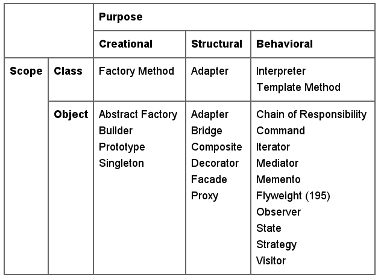

Kreirano 2023-01-16 Mon 18:15, pritisni ESC za mapu, m za meni, Ctrl+Shift+F za pretragu
Eksperti će ponovo primenjivati rešenja koja su se pokazala kao dobra u prošlosti.
Definicija sa The Free Dictionary:
The ability to use all or the greater part of the same programming code or system design in another application.
Christopher Alexander i sar. su napisali*:
Each pattern describes a problem which occurs over and over again in our environment, and then describes the core of the solution to that problem, in such a way that you can use this solution a million times over, without ever doing it the same way twice.
* Christopher Alexander, Sara Ishikawa, Murray Silverstein, Max Jacobson,
Ingrid Fiksdahl-King, and Shlomo Angel. A Pattern Language. Oxford University
Press, New York, 1977.
Svaki obrazac opisuje problem koji se pojavljuje nanovo u našem okruženju, i zatim opisuje suštinu rešenja datog problema na takav način da rešenje možete primeniti milion puta a da nikada ne rešite problem na potpuno identičan način.
Recept nastao na bazi kumuliranog ekspertskog znanja i iskustva u rešavanju određenog rekurentnog problema u razvoju softvera koji opisuje problem, rešenje i kontekst u kome je rešenje primenjivo kao i prednosti i mane rešenja.
Izbor programskog jezika i programske paradigme sa stanovišta softverskih obrazaca je važan!

Klasifikacija OO dizajn obrazaca prema [1]:
* Anti-pattern, From Wikipedia, the free encyclopediaAntiobrasci iskazuju sledeće osobine:
Primeri antiobrazaca su*:
* Za širi spisak videti http://en.wikipedia.org/wiki/Anti-pattern